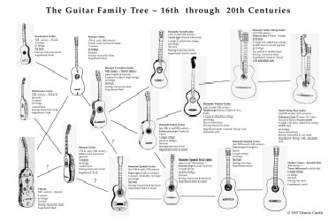

เครื่องดนตรีที่มีลักษณะคล้ายกีตาร์เป็นที่นิยมมากว่า 5,000 ปีเป็นอย่างต่ำ โดยเริ่มเป็นที่นิยมในแถบเอเชียกลาง เรียกว่าซิตาร่า (Sitara) กีตาร์ในยุคปัจจุบัน มาจากเครื่องดนตรีที่เรียกว่า cithara ของชาวโรมัน ซึ่งนำเข้าไปแพร่หลายในอาณาจักรฮิสปาเนีย หรือสเปนโบราณ ประมาณ ค.ศ. 40 จากนั้นเปลี่ยนแปลงรูปแบบจนกลายมาเป็น เครื่องดนตรีที่มี 4 สายเรียกว่า อู๊ด (oud) ค.ศ. 1200 กีตาร์ 4 สาย มี 2 ประเภท คือ กีตาร่า มอ ริสกา หรือกีตาร์ของชาวมัวร์ มีลักษณะกลมตัวคอกว้างมีหลายรู กับกีตาร่า ลาติน่า ซึ่งรูปร่างคล้ายกีตาร์ในปัจจุบัน คือมีรูเดียวและคอแคบ เครื่องดนตรีชิ้นแรกที่มีรูปลักษณ์เหมือนกีตาร์ในปัจจุบัน เกิดในช่วงยุคปลายของสมัยกลางหรือยุคต้นสมัยเรอเนสซอง สำหรับกีตาร์ที่มี 6 สาย ระบุว่ามีขึ้นในปี 1779 กีตาร์ไฟฟ้าตัวแรกเริ่มผลิตขึ้นในศตวรรษที่ 20 โดยจอร์จ โบแชมป์ (George Beauchamp) ได้รับสิทธิบัตรในปี 1936 และร่วมกับ ริกเค่นแบ็กเกอร์ (Rickenbacker)
